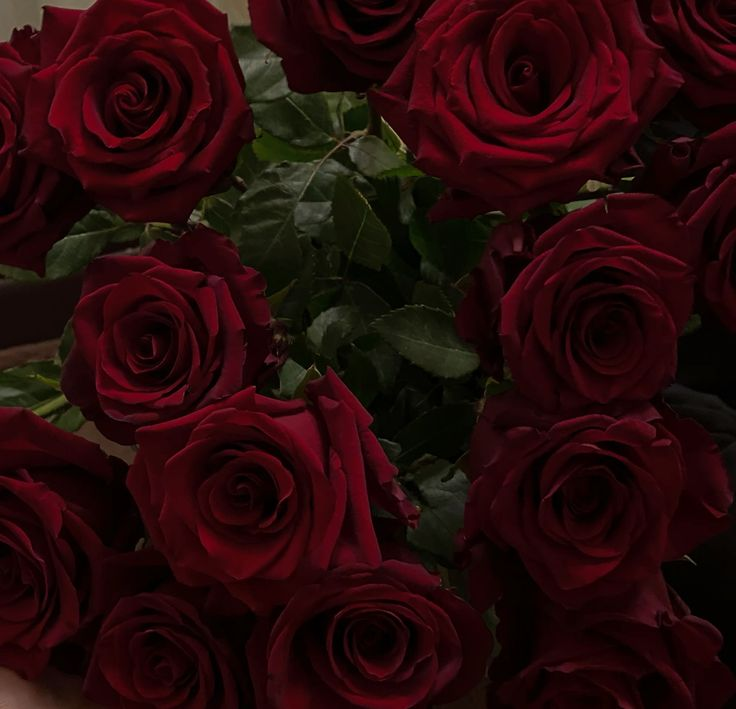
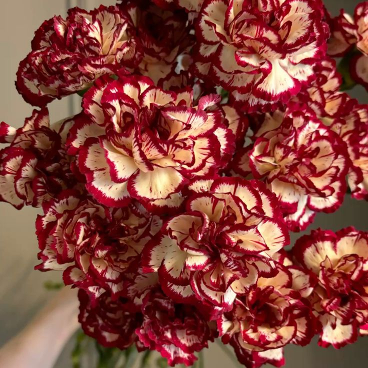
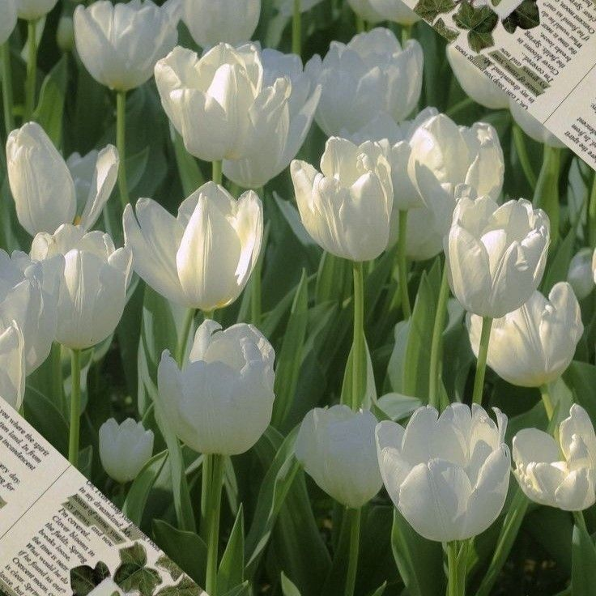
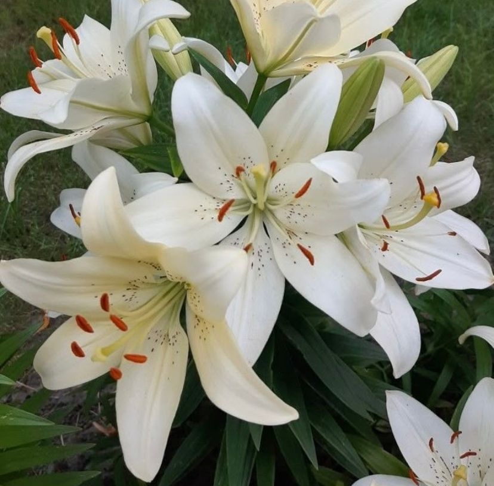
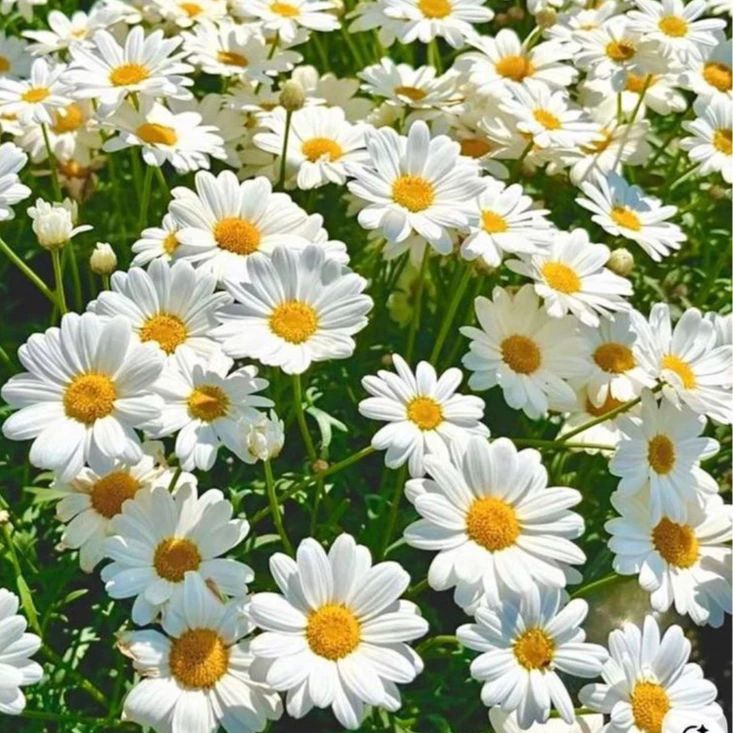
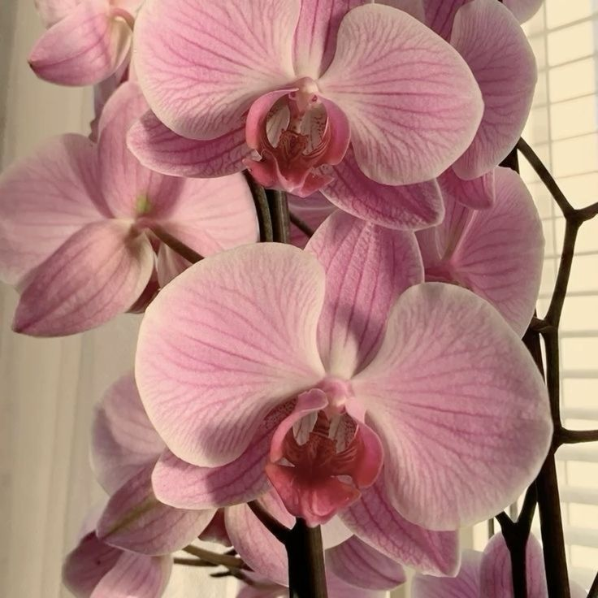
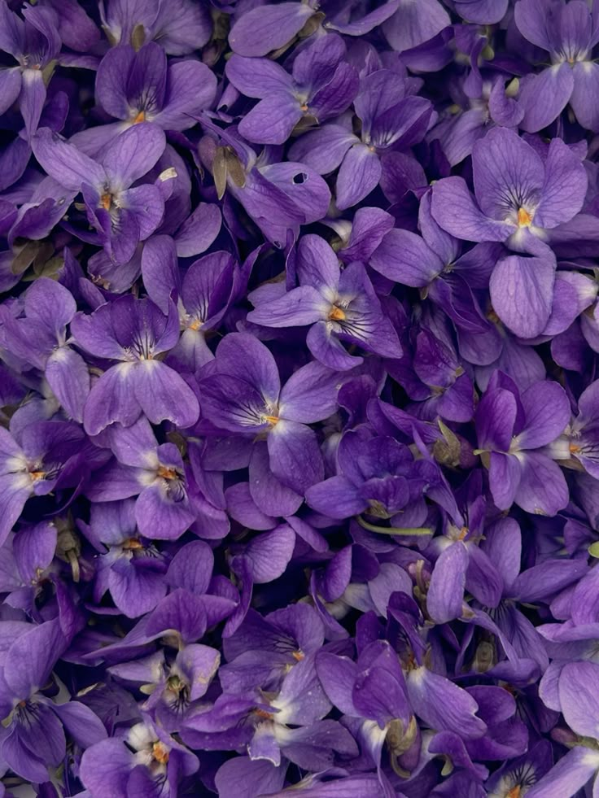
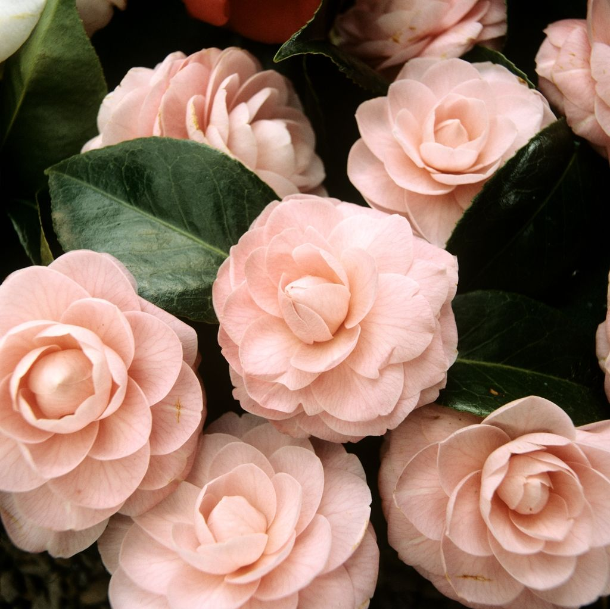

Rosa
- Rosa Cor de Rosa: Simboliza o carinho, a gratidão, a simpatia e a admiração.
- Rosa Vermelha: É o ícone do amor romântico, da paixão intensa e do desejo profundo.
- Rosa Branca: Representa a pureza, a inocência, a paz e os recomeços.
- Rosa Amarela: Traduz alegria, amizade verdadeira, lealdade e celebração da vida.
- Rosa Laranja: Exprime entusiasmo, fascínio e felicidade.
- Rosa Azul: Representa o mistério e aquilo que é considerado impossível ou inalcançável.

Cravo
- Cravo Rosa: Representa admiração e carinho.
- Cravo Vermelho: Representa paixão, amor profundo e forte admiração.
- Cravo Branco: Simboliza amor puro, inocência, pureza e boa sorte.
- Cravo Amarelo: Na linguagem tradicional, transmite desapontamento, rejeição ou uma queixa à pessoa amada.
- Cravo Roxo: Associado à solidão, inconstância ou capricho.

Tulipa
- Tulipa Amarela: Indica alegria e amizade.
- Tulipa Vermelha: Simboliza paixão e desejo.
- Tulipa Branca: Representa pureza e inocência.
- Tulipa Rosa: Está ligada à juventude, afeto e feminilidade.
- Tulipa Roxa: Representa a realeza, a tranquilidade e a elegância.
- Tulipa Laranja: Transmite vitalidade, entusiasmo e vigor.
Girassol
- O Lado Bom: Representa a felicidade, a lealdade e a adoração.
- O Lado Ruim (Negativo): Arrogância, Altivez e Falsas Riquezas.

Lírio
- Lírio Branco: Representa a pureza, a inocência, a paz e a virtude.
- Lírio Rosa: Simboliza o amor, o carinho, a ternura e a admiração.
- Lírio Amarelo: Associado à alegria, sucesso, amizade e energia positiva.
- Lírio Vermelho: Representa a paixão intensa, o amor romântico e o desejo.

Margarida
- O lado bom: Pureza, Inocência, Afeto, Bondade e Novos começos.
- O lado 'ruim': Paciência e Apego Excessivo

Orquídea
- Branca: pureza, paz, inocência e sentimentos sinceros.
- Rosa: sedução, feminilidade, carinho e declarações de amor.
- Amarela: alegria, prosperidade, amizade e sucesso.
- Roxa/Lilás: respeito, admiração e elevação espiritual.

Violeta
- O lado bom: Modéstia, Fidelidade, Lealdade, Modéstia, Humildade, Amor Verdadeiro e Secreto
- O lado ruim: Luto, Morte e Incapacidade de Expressão

Camélia
- Branca: Simboliza adoração, carinho puro e virtude.
- Rosa: Transmite saudade, sendo ideal para expressar a falta de alguém especial.
- Vermelha: Representa amor apaixonado, paixão intensa e desejo.